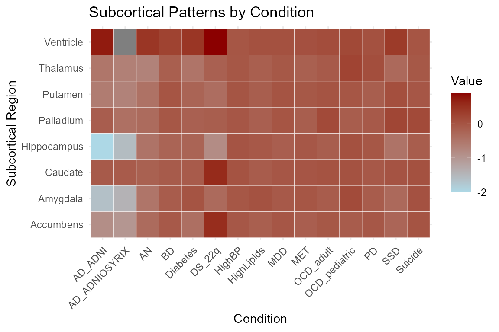
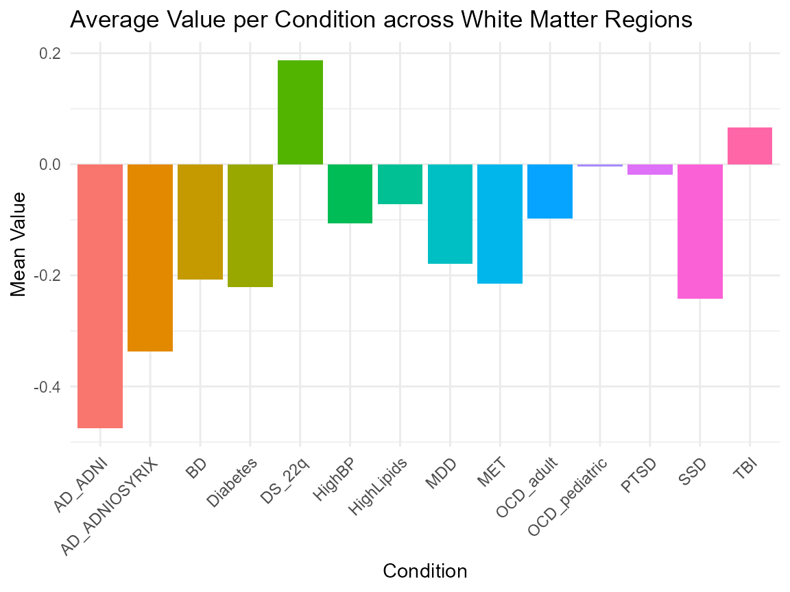

Introduction_to_NeuroDataSets
Source:vignettes/introduction_to_neurodatasets.Rmd
introduction_to_neurodatasets.Rmd
library(NeuroDataSets)
library(dplyr)
#>
#> Attaching package: 'dplyr'
#> The following objects are masked from 'package:stats':
#>
#> filter, lag
#> The following objects are masked from 'package:base':
#>
#> intersect, setdiff, setequal, union
library(ggplot2)Introduction
The NeuroDataSets package offers a rich and diverse
collection of datasets focused on the brain, the nervous system, and
neurological and psychiatric disorders. It includes data on conditions
such as Parkinson’s disease, Alzheimer’s disease, epilepsy,
schizophrenia, gliomas, and mental health.
The package contains a wide variety of data types, including clinical, experimental, neuroimaging, behavioral, cognitive, and simulated datasets. These datasets encompass structural and functional brain data, neurotransmission metrics, gene expression profiles, cognitive performance assessments, and treatment outcomes.
Dataset Suffixes
Each dataset in the NeuroDataSets package uses a
suffix to denote the type of R object:
_df: A data frame_list: A list_tbl_df: A tibble_matrix: A matrix
Example Datasets
Below are selected example datasets included in the
NeuroDataSets package:
subcortical_patterns_tbl_df: Patterns of Subcortical Structures.white_matter_patterns_tbl_df: Expected Patterns of White Matter.hippocampus_lesions_df: Memory and the Hippocampus.
Data Visualization with CardioDataSets Data
Patterns of Subcortical Structures
# Convert the dataset to long format using only base R + dplyr
long_data <- subcortical_patterns_tbl_df %>%
select(Subcortical, everything()) %>%
as.data.frame() %>%
reshape(
varying = names(.)[-1],
v.names = "Value",
timevar = "Condition",
times = names(.)[-1],
direction = "long"
) %>%
select(Subcortical, Condition, Value)
# Create a heatmap
ggplot(long_data, aes(x = Condition, y = Subcortical, fill = Value)) +
geom_tile(color = "white") +
scale_fill_gradient(low = "lightblue", high = "darkred") +
labs(
title = "Subcortical Patterns by Condition",
x = "Condition",
y = "Subcortical Region",
fill = "Value"
) +
theme_minimal() +
theme(axis.text.x = element_text(angle = 45, hjust = 1))
Expected Patterns of White Matter
# Compute mean values using updated anonymous function syntax
summary_data <- white_matter_patterns_tbl_df %>%
select(-WM) %>%
summarise(across(everything(), \(x) mean(x, na.rm = TRUE))) %>%
as.data.frame()
# Reshape from wide to long format using base R
summary_data <- data.frame(
Condition = names(summary_data),
MeanValue = as.numeric(summary_data[1, ])
)
# Plot
ggplot(summary_data, aes(x = Condition, y = MeanValue, fill = Condition)) +
geom_bar(stat = "identity") +
labs(
title = "Average Value per Condition across White Matter Regions",
x = "Condition",
y = "Mean Value"
) +
theme_minimal() +
theme(axis.text.x = element_text(angle = 45, hjust = 1)) +
guides(fill = "none") # Optional
Memory and the Hippocampus
# Lesion Size and Memory Score
ggplot(hippocampus_lesions_df, aes(x = lesion, y = memory)) +
geom_point(color = "blue", size = 2) +
labs(
title = "Relationship Between Lesion Size and Memory Score",
x = "Lesion Size",
y = "Memory Score"
) +
theme_minimal()
Conclusion
The NeuroDataSets package offers a rich, curated
collection of datasets focused on neuroscience and related disorders. It
supports advanced statistical analysis, exploratory data science, and
educational purposes by providing well-structured and documented
datasets across a variety of neurological and neuropsychiatric
conditions.
For detailed information and full documentation of each dataset, please refer to the reference manual and help files included within the package.